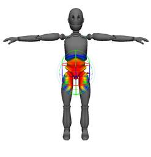

利用交互式平滑蒙皮绑定方法，可以基于体积操纵器设定网格上的初始权重。体积对象可以让您直观地了解要绑定的每个关节的影响范围。
注：
NURBS 曲面不支持交互式蒙皮绑定。
平滑绑定蒙皮并使用操纵器设定初始权重
- 选择骨架（或关节），然后选择要绑定的可变形对象。
- 执行下列操作之一：
- 若要使用默认的“交互式蒙皮绑定选项”(Interactive Skin Bind Options)创建操纵器，请选择“蒙皮 > 交互式蒙皮绑定”(Skin > Interactive Skin Bind)。
- 若要先设置交互式绑定蒙皮选项，请选择“蒙皮 > 绑定蒙皮 > 交互式蒙皮绑定”(Skin > Bind Skin > Interactive Skin Bind) >
 ，设置所需选项，然后单击“绑定蒙皮”(Bind Skin)。
，设置所需选项，然后单击“绑定蒙皮”(Bind Skin)。 使用“交互式蒙皮绑定选项”(Interactive Skin Bind Options)可以定义体积操纵器的初始形状和大小。例如，若要创建近似长度与骨骼对象相同的操纵器，请将“最小权重”(Minimum Weight)设定为 0。此选项还会基于周围网格为操纵器提供一个默认体积。您也可以使用“体积类型”(Volume Type)下拉列表来设定操纵器的形状是胶囊还是圆柱体。
体积操纵器显示在选定关节（或选定层次中的最高关节）上，同时将显示“交互式蒙皮绑定工具”(Interactive Skin Binding Tool)设置。
如果在最初绑定时发现锯齿变形，表示某个区域的顶点尚未包含在任何体积操纵器的影响范围内。随着调整体积操纵器的形状和大小以包含这些收拢顶点，锯齿瑕疵将消失。
您可以即刻开始拖动操纵器的边以调整其形状，直至其可以反映您需要的影响量。有关详细信息，请参见调整交互式绑定操纵器。
使用操纵器建立了粗糙的蒙皮权重之后，您可以继续绘制权重和调整网格的权重。